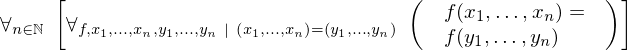

Show the Proof¶
In [1]:
import proveit
# Automation is not needed when only showing a stored proof:
proveit.defaults.automation = False # This will speed things up.
proveit.defaults.inline_pngs = False # Makes files smaller.
%show_proof
Out[1]:
| step type | requirements | statement | ||
|---|---|---|---|---|
| 0 | generalizaton | 1 | ⊢  | |
| 1 | instantiation | 2, 3, 4 |  , ,  ⊢ ⊢  | |
 : , : ,  : , : ,  : , : ,  : : | ||||
| 2 | axiom | ⊢  | ||
| proveit.core_expr_types.operations.operands_substitution | ||||
| 3 | instantiation | 5, 6, 8 | ⊢  | |
 : :  , ,  : :  , : , : | ||||
| 4 | instantiation | 7, 8, 9 | , ⊢  | |
 : , : ,  : , : ,  : : | ||||
| 5 | theorem | ⊢  | ||
| proveit.logic.sets.inclusion.superset_membership_from_proper_subset | ||||
| 6 | theorem | ⊢  | ||
| proveit.numbers.number_sets.natural_numbers.nat_pos_within_nat | ||||
| 7 | theorem | ⊢  | ||
| proveit.core_expr_types.tuples.tuple_eq_via_elem_eq | ||||
| 8 | assumption | ⊢ | ||
| 9 | assumption | ⊢  | ||